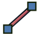

Cables Workbench/pl
Wprowadzenie
The  Cables Workbench is a toolset for modeling electrical installations in architectural design projects. It is made to help run cables inside buildings or other objects and to build models of cables with the possibility of making single wire connections. It is an external workbench.
Cables Workbench is a toolset for modeling electrical installations in architectural design projects. It is made to help run cables inside buildings or other objects and to build models of cables with the possibility of making single wire connections. It is an external workbench.
This toolset can be used to create electrical boxes or other ready to use electrical elements (the element list will hopefully be expanded in the future). These elements can be connected with fully parametric cables of different profiles, number of wires and thicknesses. There are a few predefined cable profiles here, but there is also possibility to create custom non standard profiles with a simple csv file.
Models built with this workbench allow easy repositioning of elements without breaking connections. Cables can adjust their shape to new positions. However, this feature is not perfect yet.
The workbench aims to be compatible with BIM Workbench (solid objects created here should have the same base attributes and properties as other BIM objects: materials, IFC type and IFC attributes etc.), but it can be used for purposes other than architectural designs. Since version 0.3.0 the workbench became also more suitable for modeling connections between PCBs, inside machines etc. It allows to build custom libraries of connectors, boxes and electrical devices (any help in creating, for example, a set of ready-made connectors is very welcome).

Example of wall mounted boxes and cable
Animated version here


Left: example of distribution box with MCBs.
Right: example of a cable terminated with connectors
Instalacja
This workbench can be installed from  Addon Manager. See also Installing more workbenches for manual installation.
Addon Manager. See also Installing more workbenches for manual installation.
Przybory
Cable tools are divided into few groups depending on their purpose.
Wire creation and manipulation tools
 WireFlex: Creates a new WireFlex object stretched between two or more selected vertices/objects.
WireFlex: Creates a new WireFlex object stretched between two or more selected vertices/objects.
 Add Vertex: Creates an additional vertex on a selected WireFlex edge.
Add Vertex: Creates an additional vertex on a selected WireFlex edge.
 Delete Vertex: Deletes a selected WireFlex vertex.
Delete Vertex: Deletes a selected WireFlex vertex.
 Attach Vertex: Attaches selected WireFlex vertex to external vertex|object.
Attach Vertex: Attaches selected WireFlex vertex to external vertex|object.
 Remove Vertex Attachment: Removes selected WireFlex vertex attachment from external vertex|object.
Remove Vertex Attachment: Removes selected WireFlex vertex attachment from external vertex|object.
 Attach Wire to Terminal: Makes attachment of wire end to the Terminal (introduced in version 0.3.0).
Attach Wire to Terminal: Makes attachment of wire end to the Terminal (introduced in version 0.3.0).
 Detach Wire from Terminal: Removes wire end attachment from the Terminal (introduced in version 0.3.0).
Detach Wire from Terminal: Removes wire end attachment from the Terminal (introduced in version 0.3.0).
 CompoundPath: Creates a new CompoundPath object based on selected objects (introduced in version 0.2.0). It creates a wire object based on a group of other wire objects. Its topological shape is a compound of wire shapes or a single wire shape.
CompoundPath: Creates a new CompoundPath object based on selected objects (introduced in version 0.2.0). It creates a wire object based on a group of other wire objects. Its topological shape is a compound of wire shapes or a single wire shape.
 Cables Edit: Edits the active WireFlex object (introduced in version 0.2.0).
Cables Edit: Edits the active WireFlex object (introduced in version 0.2.0).
Tools for making cables and other ready-made elements
 Cable Profile: Adds a new cable profile to the current document.
Cable Profile: Adds a new cable profile to the current document.
 Cable: Adds a new cable based on selected wire and profile.
Cable: Adds a new cable based on selected wire and profile.
 CableConduit: Adds a new cable conduit based on selected wire (introduced in version 0.2.0).
CableConduit: Adds a new cable conduit based on selected wire (introduced in version 0.2.0).
 Cable Box: Adds a new parametric cable box.
Cable Box: Adds a new parametric cable box.
 Cable Connector: Adds a new parametric universal cable connector.
Cable Connector: Adds a new parametric universal cable connector.
 Cable Light Point: Adds a new parametric universal light point for cable.
Cable Light Point: Adds a new parametric universal light point for cable.
 Cable Electrical Device: Adds a new electrical device (introduced in version 0.3.0).
Cable Electrical Device: Adds a new electrical device (introduced in version 0.3.0).
 Cable Materials: Adds a default set of multimaterials to the current document.
Cable Materials: Adds a default set of multimaterials to the current document.
Dependent objects
These objects cannot be created directly. They are designed to coexist with Cable Box, Cable Connector, Cable Light Point or Electrical Device objects depending on their configuration.
-  Cable Terminal: Contains a parametric cable terminal object (introduced in version 0.3.0).
{kind=link}
 SuppLines: Contains a SuppLines object (introduced in version 0.3.0).
SuppLines: Contains a SuppLines object (introduced in version 0.3.0).
Support tools
These tools are mainly used to organize and simplify the attachments of other objects. They can also be used successfully with other workbenches.
 Support Point: Adds a universal support point.
Support Point: Adds a universal support point.
 Support Line: Adds a universal support line.
Support Line: Adds a universal support line.
 Attach in Place: Makes an attachment without changing global placement of an object (introduced in version 0.3.0).
Attach in Place: Makes an attachment without changing global placement of an object (introduced in version 0.3.0).
 Deactivate Attachment: Deactivates attachment of selected objects (introduced in version 0.3.0).
Deactivate Attachment: Deactivates attachment of selected objects (introduced in version 0.3.0).
External tools
 Toggle grid: Changes the visibility of the grid.
Toggle grid: Changes the visibility of the grid.
Uwagi
To środowisko pracy jest obecnie w fazie alfa. Możesz spodziewać się pewnych błędów, które mogą spowodować uszkodzenie modelu. Niektóre właściwości modeli mogą ulec zmianie w przyszłości i spowodować uszkodzenie modeli utworzonych w obecnej wersji. Strony wiki związane z tym środowiskiem pracy również mogą ulec znacznym zmianom w przyszłości. Wszelkie uwagi i nowe pomysły są mile widziane. Prosimy o przesyłanie uwag i zgłoszeń za pośrednictwem kanałów określonych w sekcji Bibliografia.
Opis podstawowego przebiegu pracy
- Create endpoints for cables like: Cable Box or Cable Light Point and arrange them in a 3D space.
- Create base wires connecting created endpoints with WireFlex and arrange them in a 3D space with the help of Support Lines or Support Points.
- Create Cable Profiles suitable for the project.
- Create Cables based on existing base wires and profiles.
- Color the cables with the predefined or customized Cable Materials.
- Finally (and optionally) connect chosen single cable wires using Cable Connectors.
Poradniki i przykłady
Przykładowe dokumenty FreeCAD zawierające kable:
- Przykłady dostarczane razem z kodem źródłowym.
Przykładowe animowane obrazy:
- Przykładowy prosty przepływ pracy
- Przykłady ruch przewodów elastycznych
- Przykładowe zastosowanie puszki kablowej
- Przykładowe zastosowanie złącza kablowego
Poradniki:
Wideo poradniki / przykłady
Bibliografia
- Autor:
- Kod źródłowy na GitHub: https://github.com/sargo-devel/Cables
- Forum FreeCAD: https://forum.freecad.org/viewtopic.php?t=94090
- Zgłaszanie błędów: Proszę zgłaszać błędy w repozytorium GitHub projektu